Em um dia intenso de teoria e prática supervisionada, desenvolva o olhar clínico e aprenda a planejar e executar o Método Bum Sculp 3D para criar resultados naturais, harmônicos e seguros.
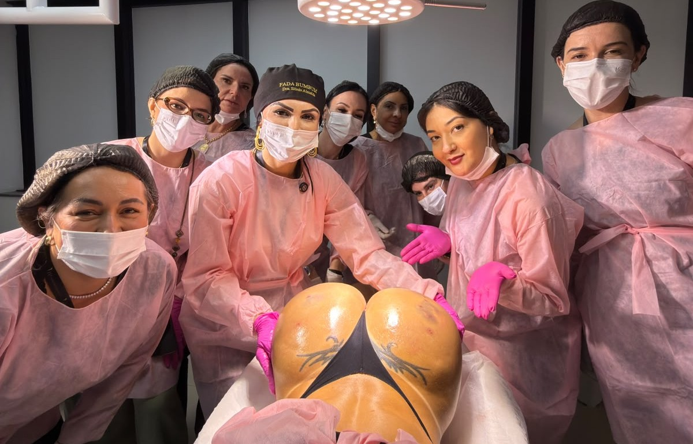
A 2ª edição do curso presencial em São Paulo foi criada para ensinar o olhar clínico e a arte de esculpir do Método Bum Sculp 3D. Você percorre o caminho do planejamento à execução para construir resultados naturais, harmônicos e seguros.
Aprenda a avaliar anatomia, formatos glúteos e necessidades individuais antes da agulha.
Use o Mapa 3D para orientar avaliação, marcação e escolha da estratégia para cada caso.
Acompanhe demonstrações e pratique com pacientes-modelo sob orientação da Dra. Elinis.
Integre biossegurança, prevenção de intercorrências e cuidados pós-procedimento.
Pacientes da Dra. Elinis Almeida, com imagens publicadas mediante autorização. Resultados variam de pessoa para pessoa.
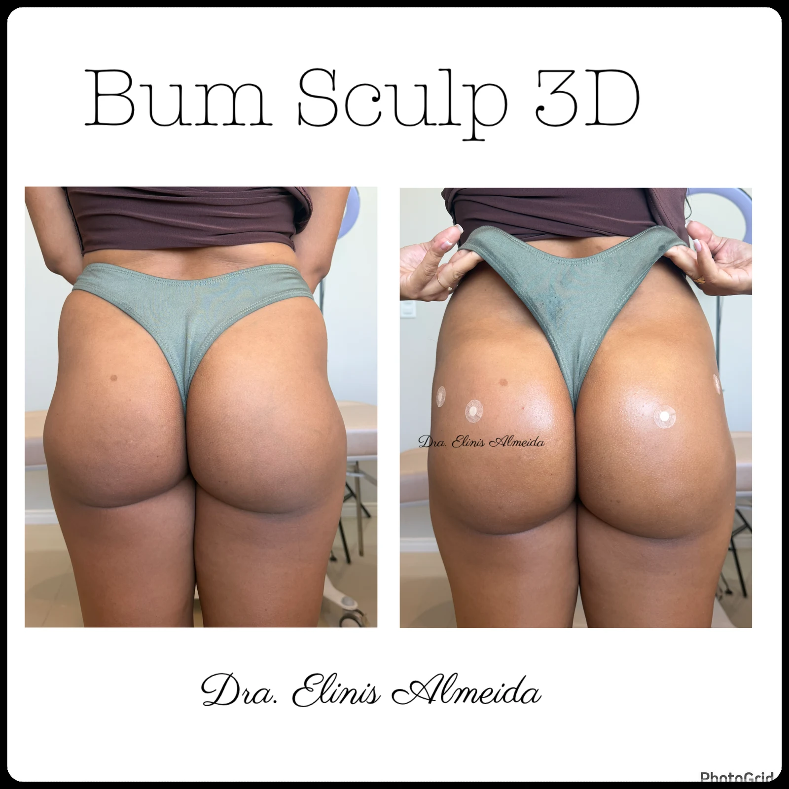
01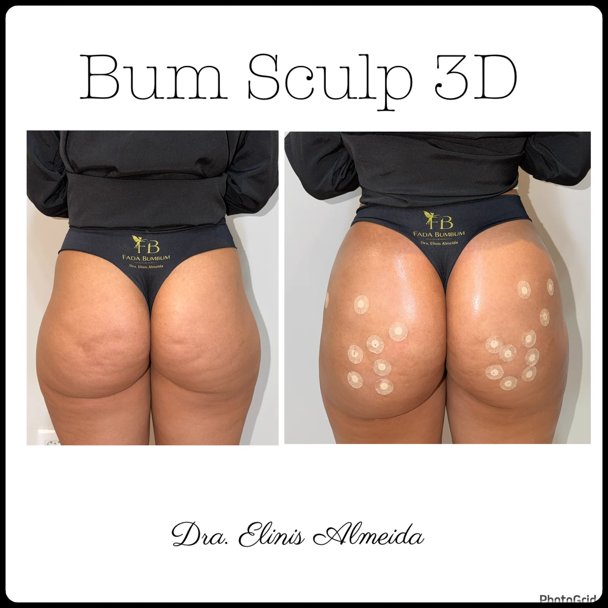
02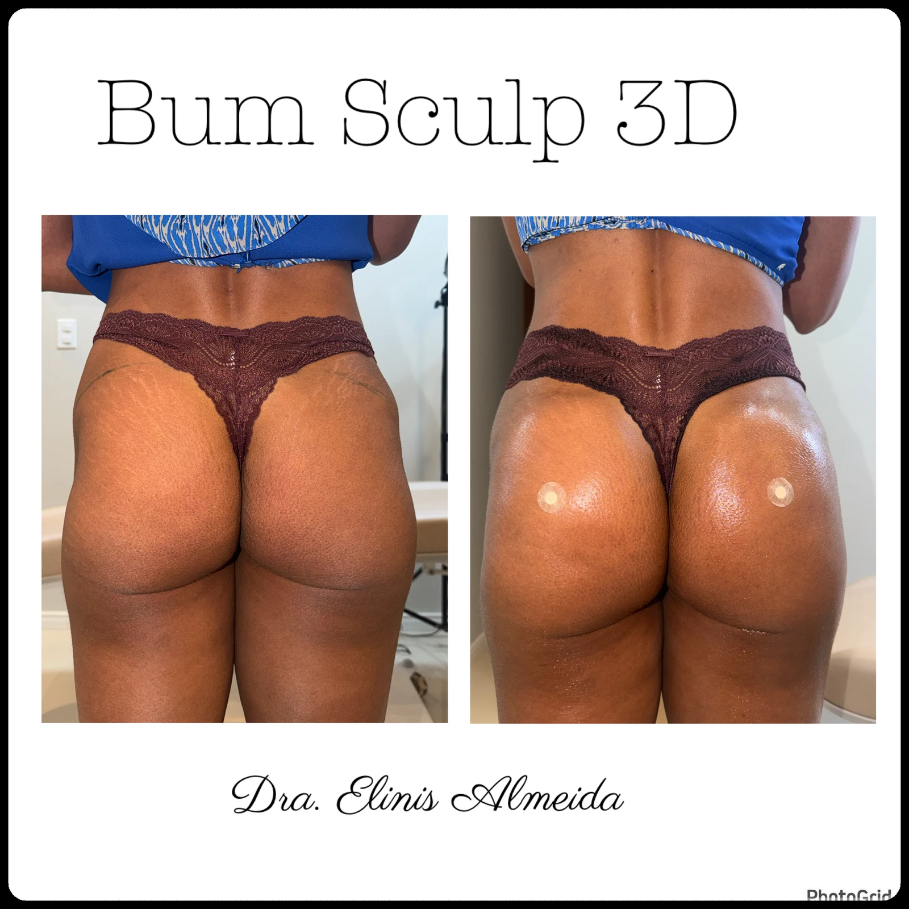
03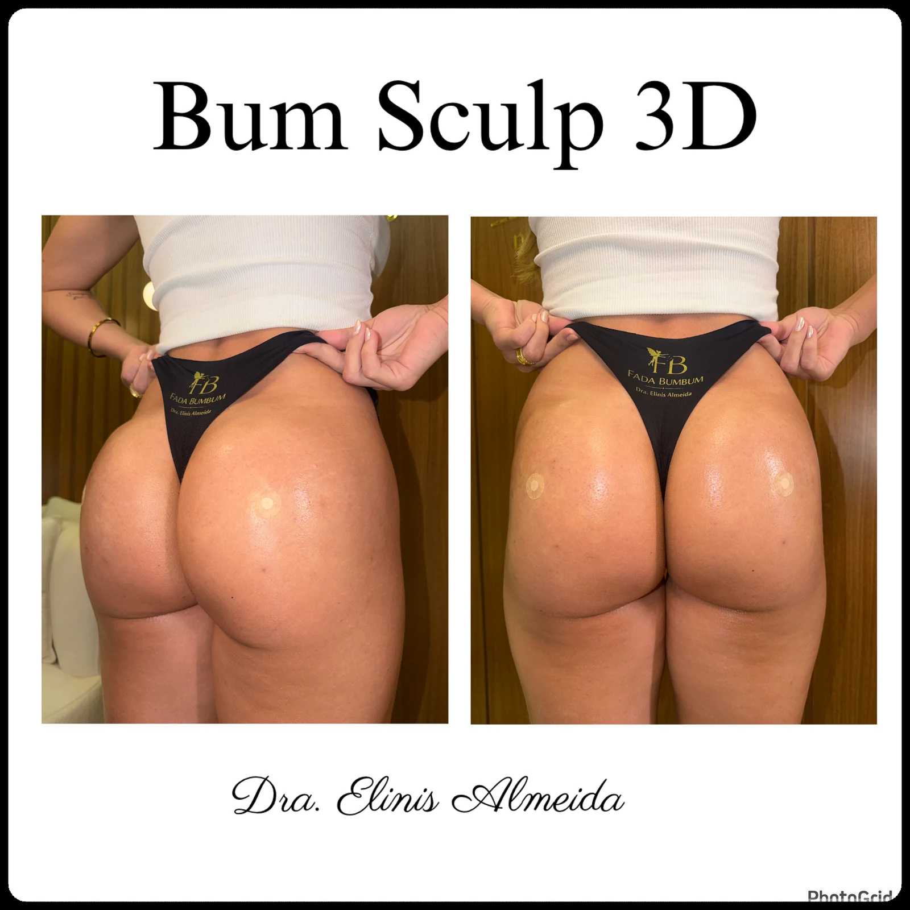
04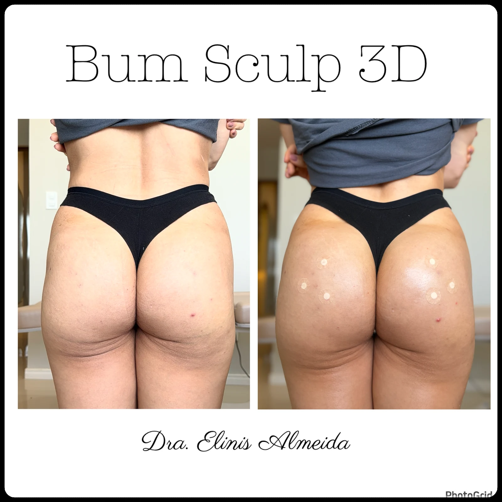
05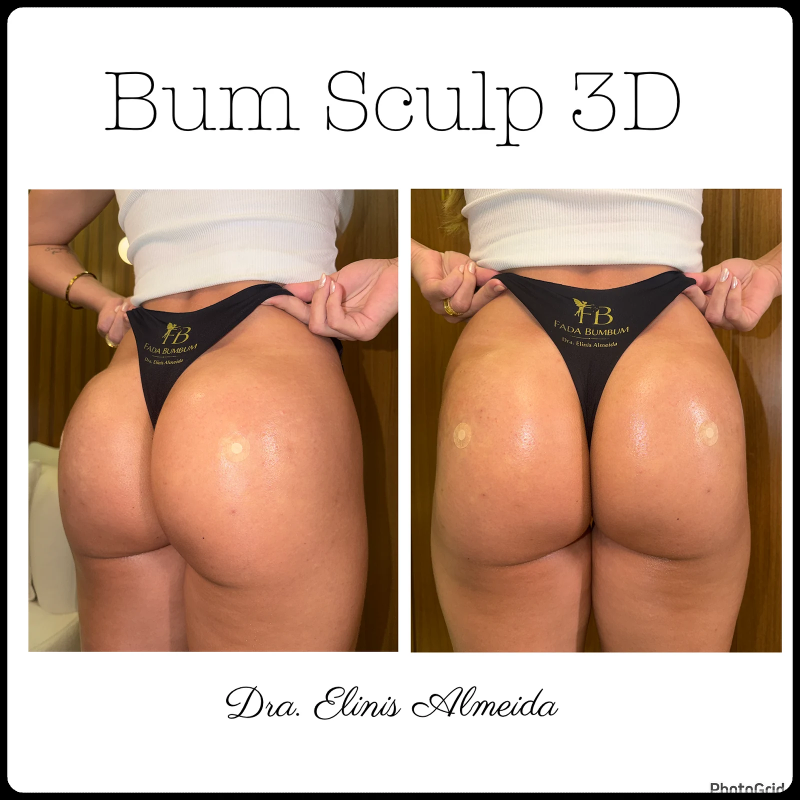
06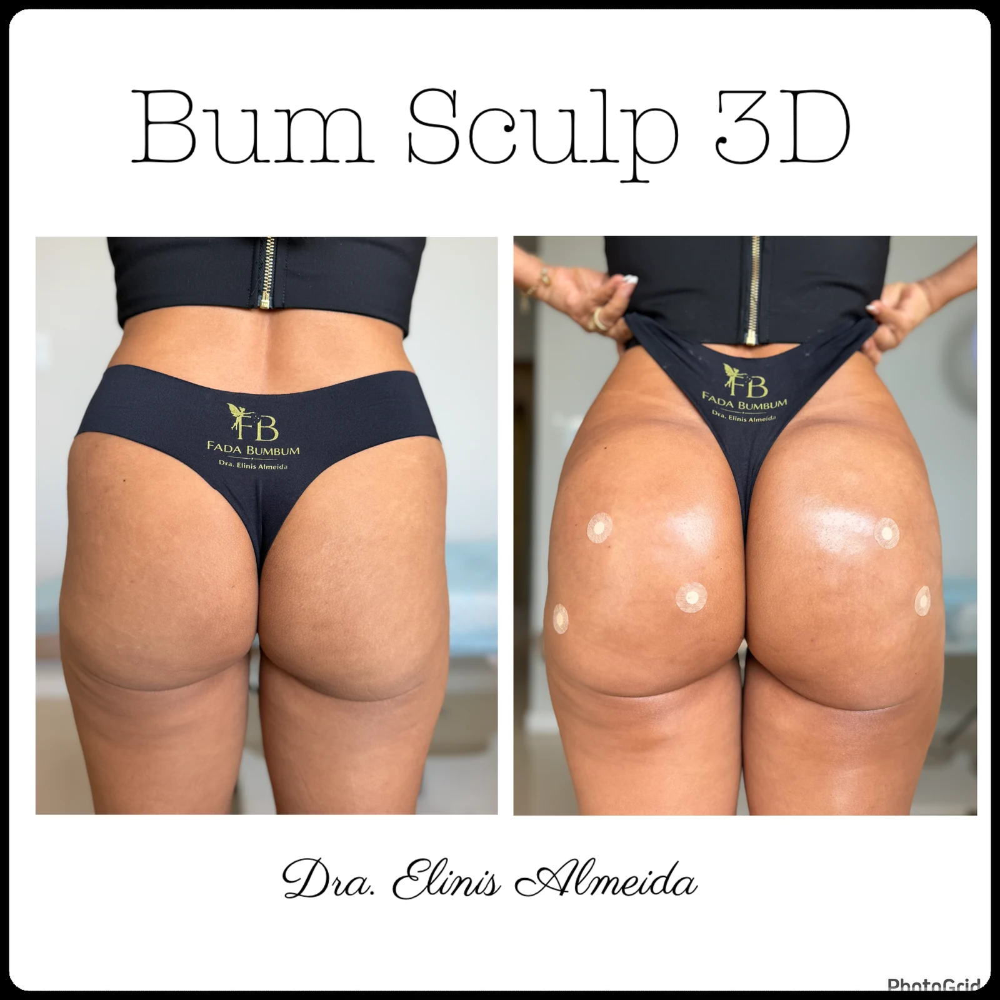
07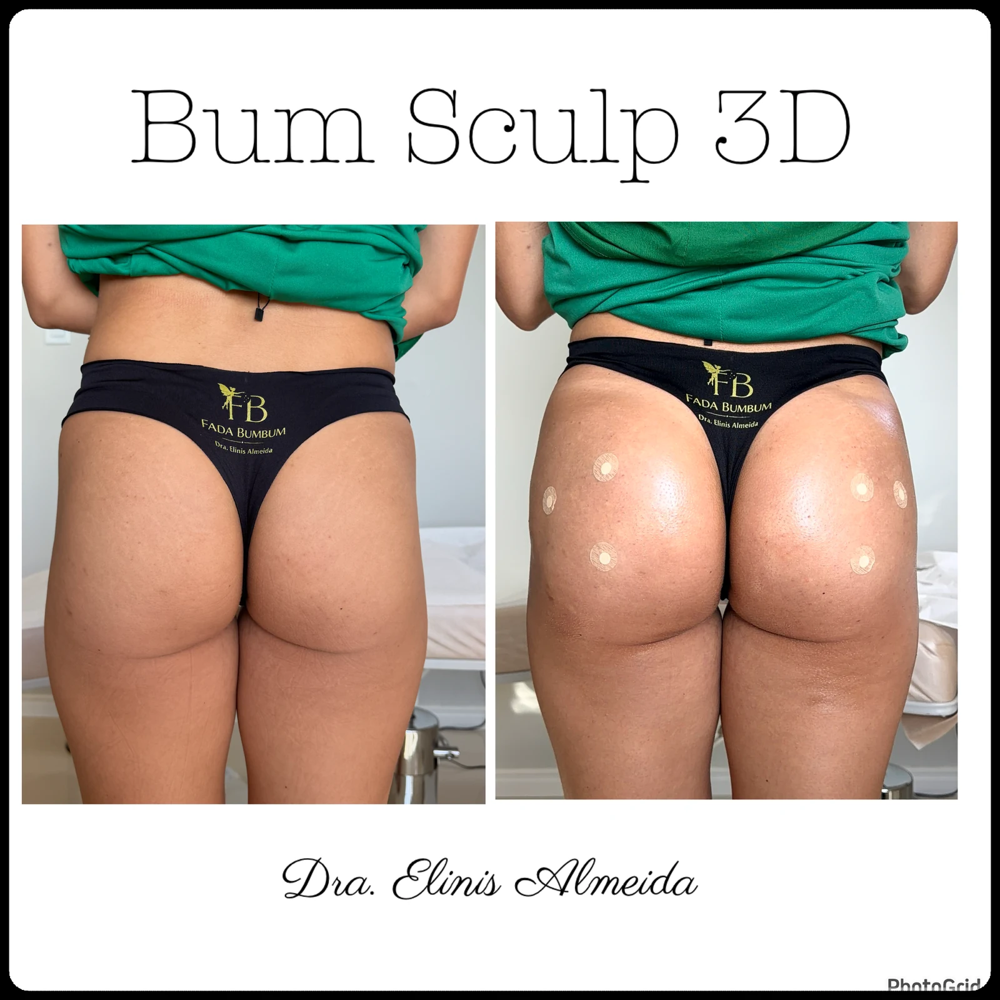
08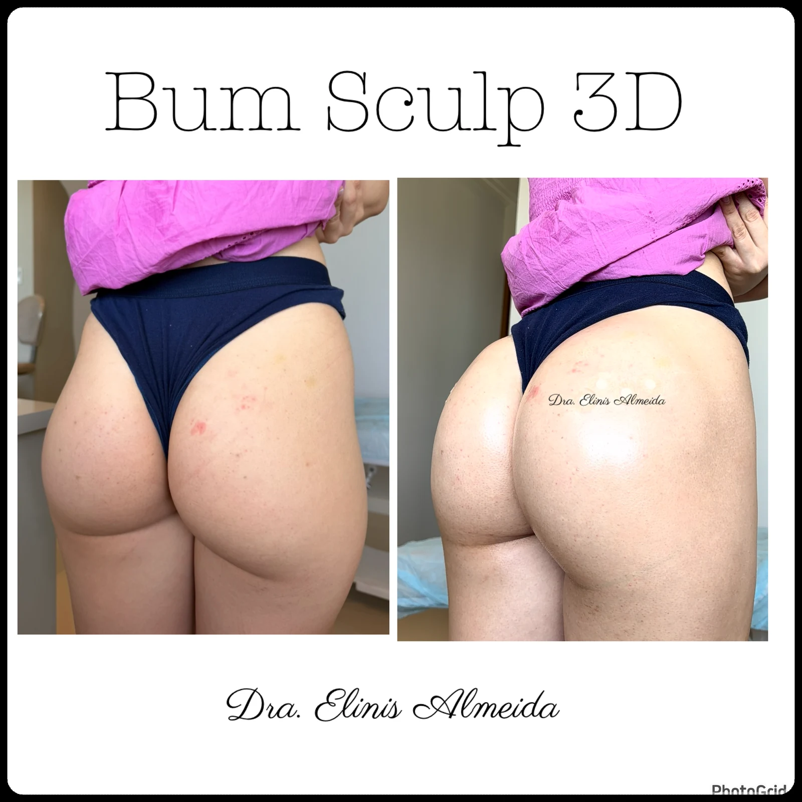
09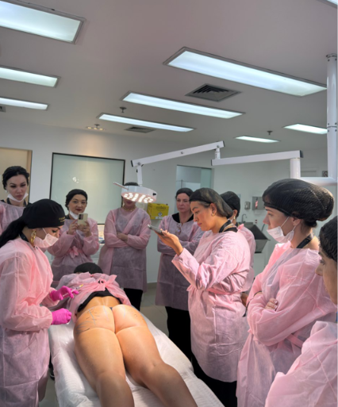
No sábado, 12 de dezembro, você vive um dia completo de teoria e prática supervisionada. O objetivo é sair com mais clareza clínica, segurança e domínio do planejamento para aplicar o Método Bum Sculp 3D dentro da sua habilitação profissional.
Coffee break, entrega das credenciais, kit de boas-vindas, scrub e gorro.
Método Bum Sculp 3D, anatomia, Mapa 3D, os três pilares, ácido hialurônico, bioestimuladores, subcisão e segurança. Às 12h, pausa para almoço.
Avaliação, marcação, demonstrações e prática supervisionada com a Dra. Elinis.
Discussão de casos, dúvidas, entrega dos certificados e fotos da turma, até as 20h.
Assim que sua inscrição for confirmada, você recebe acesso automático ao Método Bum Sculp Online, com a metodologia para estudar e chegar ao encontro presencial muito mais preparada.
Comece sua preparação logo após a confirmação da inscrição.
Estude os fundamentos do Método Bum Sculp antes da experiência presencial.
Chegue com repertório para acompanhar melhor a teoria, as demonstrações e a prática supervisionada.
Credenciamento e materiais preparados para receber você na experiência presencial.
Scrub e gorro personalizados para acompanhar a etapa prática.
Conteúdo clínico estruturado para sustentar cada decisão durante a prática.
Avaliação, marcação e prática com pacientes-modelo sob orientação.
Certificado de conclusão entregue ao final da imersão.
Recepção com coffee break antes do início da aula teórica.
Antes da agulha, vem a leitura completa de cada glúteo. O Mapa 3D organiza o raciocínio clínico para você planejar cada caso com intenção.
O Mapa 3D é o método de avaliação criado pela Fada Bumbum. Ele conecta anatomia, formatos glúteos e objetivos da paciente para orientar marcação, escolha de produtos e execução.
Quando você aprende a enxergar, cada decisão técnica passa a responder ao caso real à sua frente.
A prática depende de critérios clínicos, consentimento das pacientes-modelo e habilitação profissional de cada participante.
"Eu não quero que você copie e cole resultados. Quero que você aprenda a enxergar."
Enfermeira esteta, empresária, mentora de cursos presenciais e online e criadora do Método Bum Sculp 3D. O nome Fada Bumbum nasceu das próprias pacientes.
Desenvolveu o Método Bum Sculp 3D e o Mapa 3D para guiar avaliação, planejamento e execução.
Conduz cursos presenciais e online para profissionais que buscam domínio clínico.
Une experiência clínica, segurança e sensibilidade estética na construção dos resultados.
Um nome dado pelas próprias pacientes e transformado em identidade profissional.
É profissional habilitada e quer aprofundar a harmonização glútea com método.
Quer desenvolver um olhar clínico mais apurado antes de escolher a técnica.
Busca um planejamento individualizado, sem copiar e colar resultados.
Deseja compreender como Lift, Projeção e Hip Dips se influenciam.
Quer viver prática supervisionada com pacientes-modelo.
Valoriza segurança, naturalidade e harmonia em cada caso.
A condição de abertura da turma está disponível diretamente com a equipe da Dra. Elinis no WhatsApp.
Fale com a equipe e consulte a condição vigente para a turma de São Paulo.
Confirme todos os detalhes sobre inscrição, cronograma e participação na prática.
Receba a orientação necessária para avançar e reservar sua vaga.
A condição é limitada. Chame a equipe no WhatsApp para consultar a disponibilidade atual.
Um dia para aprender a olhar, planejar e executar com mais segurança. Viva a 2ª edição do Curso Presencial São Paulo e leve o Método Bum Sculp 3D do raciocínio clínico à prática supervisionada.
Quero garantir minha vaga ›11º andar · Jardim Paulista · São Paulo — SP